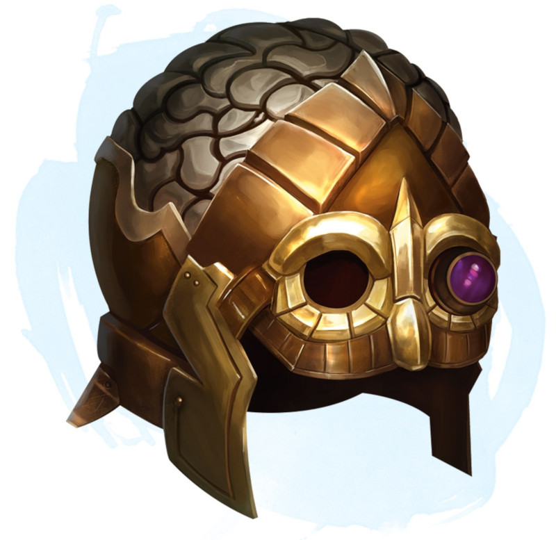

Helm of Telepathy
Wondrous item, uncommon (requires attunement)
While wearing this helm, you can use an action to cast the detect thoughts spell (save DC 13) from it. As long as you maintain concentration on the spell, you can use a bonus action to send a telepathic message to a creature you are focused on. It can reply—using a bonus action to do so—while your focus on it continues.
While focusing on a creature with detect thoughts, you can use an action to cast the suggestion spell (save DC 13) from the helm on that creature. Once used, the suggestion property can't be used again until the next dawn.
While focusing on a creature with detect thoughts, you can use an action to cast the suggestion spell (save DC 13) from the helm on that creature. Once used, the suggestion property can't be used again until the next dawn.
Dungeon Master´s Guide (SRD)
